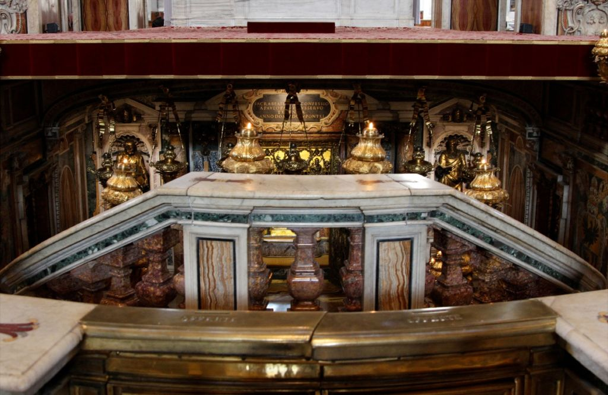

Пожалуй, по популярности у туристов это величественное ватиканское строение нисколько не уступает Колизею. Помимо того, что лежит на поверхности, немало интересного скрывает и его подземная часть. Знаменитые гроты, конечно, отнимут у вас еще немало времени, зато гарантировано оставят неизгладимое впечатление. То же можно сказать и о Сокровищнице.
Собор Святого Петра
Балдахин Бернини
Созданный известным архитектором Лоренцо Бернини (1624-1633 гг.) специальный навес над алтарем, именуемый балдахином, находится в соборе Святого Петра в Ватикане. Огромный бронзовый балдахин (киворий), высотой 29 метров, установлен прямо под круглым отверстием в вершине купола собора на четырёх витых колоннах, на которых стоят статуи ангелов.
Множество декоративных элементов конструкции воспевают аристократический род понтифика Урбана VIII, при котором балдахин был создан. Всех посетителей собора шедевр Бернини до сих пор поражает своей роскошью и монументальностью.
Сикстинская капелла
Одно из легендарных произведений итальянского живописца Микеланджело имеет богатую историю. Именно ее вам расскажут гиды еще до входа в помещение, ведь непосредственно внутри говорить (равно как и фотографировать) строжайше запрещено местными законами. Место пользуется популярностью среди туристов, и чтобы не томиться в длинной очереди, рекомендуем заранее озаботиться покупкой билета.
Ватиканские сады
В хорошую погоду сама природа решает, что посмотреть в Ватикане. В этот знаменитый своей красотой ландшафтный ботанический парк приведут гиды в Ватикане – без них попасть сюда не получится. В XVIII в. здесь выращивались фрукты, овощи и медицинские растения, сегодня растительный мир на 20 га имеет исключительно декоративное предназначение.
Станцы Рафаэля
Рассматривая достопримечательности Рима, стоит запланировать посещение и этого места. 4 дворцовые комнаты сплошь расписаны фресками работы Рафаэля периода 1508-1517 гг. В зале Константина некоторые изображения выполнялись после смерти мастера его учениками. Это место заслуживает лучшие рекомендации путешественников.

Подробное описание этой достопримечательности Ватикана составить сложно, лучше один раз увидеть. Стены апартаментов, устроенных в частном крыле Ватиканского дворца этажом ниже Станцов Рафаэля, расписаны уникальными фресками. Кроме 6 залов с тематическими названиями, апартаменты дополняют сокровищница и папская спальня.
Замок Сант-Анджело
Этот величественный исторический памятник находится неподалеку от Ватикана, так что, отправляясь туда на экскурсию, можно дать себе небольшую фору и заглянуть к замку Святого Ангела. Здание стоит на берегу живописной реки Тибр, через которую к нему ведет пешеходный мост.
Священные Гроты Ватикана

Главная святыня собора Святого Петра. Гроты расположены примерно в трех метрах под землей. Представляют собой множество переплетенных катакомб и пещер. Именно в этих местах покоятся выдающиеся церковные деятели.
Также на территории можно найти усыпальницы и других важных лиц, чья судьба и деятельность так или иначе была связана с церковью. Например, тут находятся памятные склепы членов королевской семьи, императоров и пап Римских. Священные гроты Ватикана открыты для публики, поэтому туристы обращают внимание на эти места.
Григорианский Этрусский музей
Не знаете, куда сходить в Ватикане во время поездки в Италию? Этот музей определённо заслуживает внимания. На момент открытия в 1837 г. экспозиция состояла из находок, найденных десятью годами ранее в южной Энтрурии при раскопках античных поселений. Каждый из 22 залов посвящен отдельным экспонатам. Здесь хранится мраморный портрет Афины, бронзовая статуя Марса, украшения, предметы быта.
Галерея географических карт
Длина галереи — всего 120 метров, а ширина — 6. Но привлекает она далеко не своим масштабом, а уникальной коллекцией карт, которые рассказывают о различных регионах Италии.
Работы выполнены в виде настенной росписи, на которой изображены географические карты. Художники воспроизводили на них рельеф, реки, холмы, озера и даже населенные пункты. Рядом с картами предоставляется краткая их характеристика и предыстория.